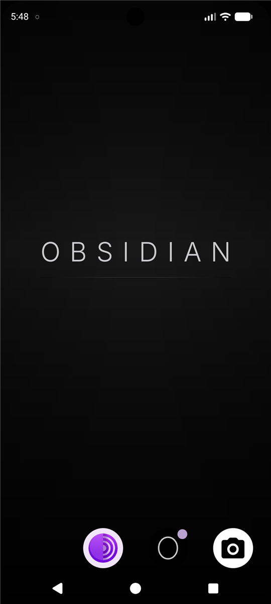
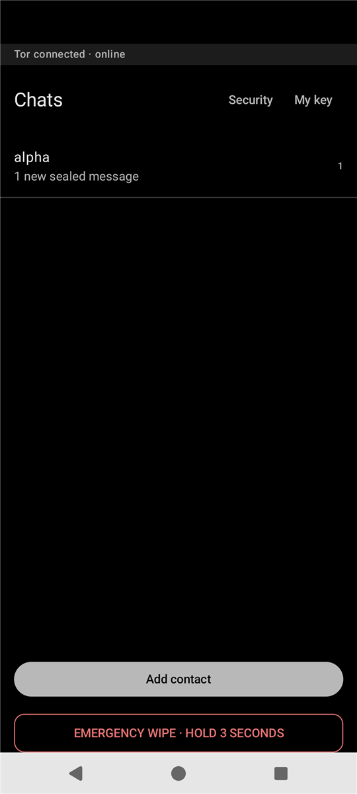
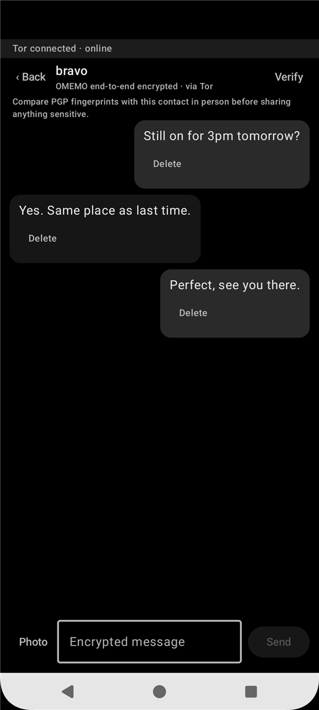
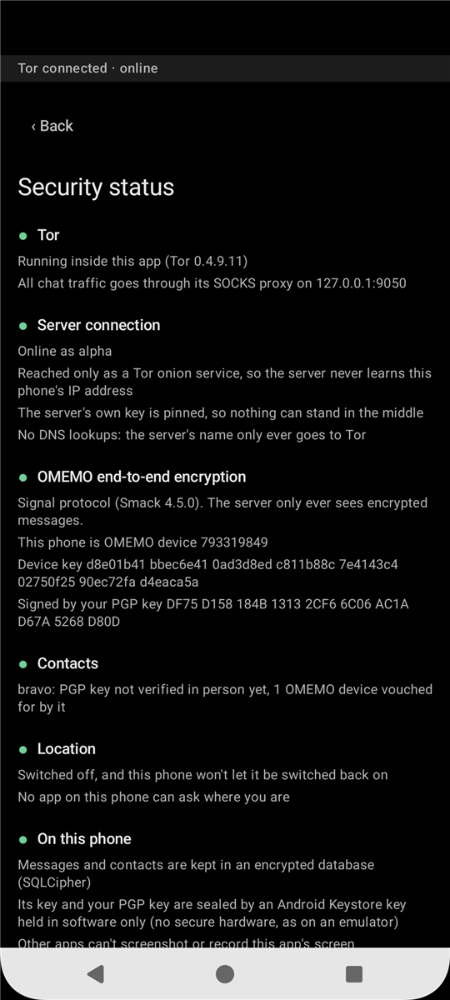
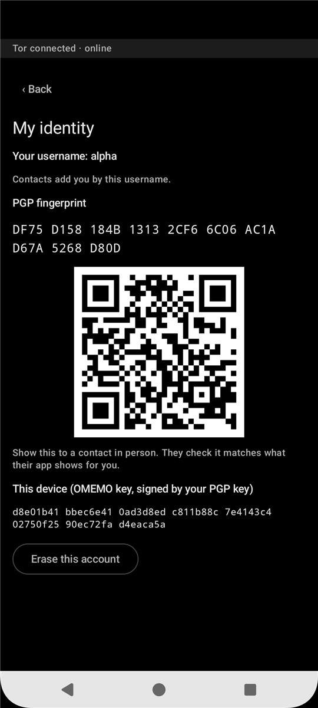
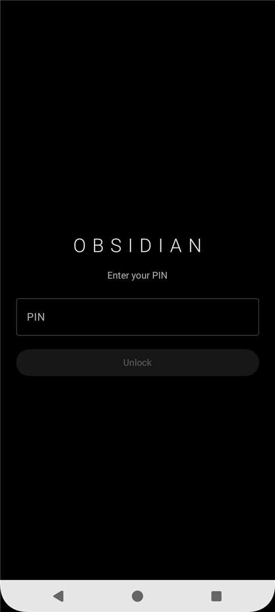

Encrypted chat
Messages travel over Tor and are end-to-end encrypted with the Signal protocol. Contacts are added by username — no phone numbers, no email.
Early development · test builds only
Three apps. Everything encrypted. Nothing to sell. OBSIDIAN is an Android phone stripped back to what private communication actually needs — and built so that even the people running it cannot read your messages.
No phone number required. No account recovery. No analytics anywhere, including on this page.
Every app that could leak something has been taken out of the operating system — not hidden, not disabled, removed from the image.
Messages travel over Tor and are end-to-end encrypted with the Signal protocol. Contacts are added by username — no phone numbers, no email.
Tor Browser, and nothing else. There is no second browser quietly syncing history somewhere.
Photos stay on the phone. When you send one, its location and camera details are stripped off first.
Before anything leaves, the message is sealed to your contact's device keys. Only their phone holds the key that opens it.
The app talks to nothing directly. Even the name lookup goes through Tor, so the server never learns where you are.
The server moves an encrypted blob between two accounts. It keeps no archive of what it moved.
Messages arrive sealed. Your contact taps to open, so nothing sensitive sits on screen when the phone is picked up.
Hold one button for three seconds. The phone erases itself and returns to factory settings. No confirmation dialog, no waiting on a network.
The phone has a lock screen, and the app has its own PIN and locks itself whenever you leave it. The app refuses to open on a phone with no lock at all.
Every account has a fingerprint and a QR code. Compare them face to face once, and you know who you are talking to from then on.
Messages and contacts live in an encrypted database whose keys are sealed by the phone's security chip.
Screens from the current build.






Privacy claims are worth nothing without the uncomfortable half. Here is both.
No, and that is deliberate. Your keys and password exist only on your phone. If it is wiped or lost, that account ends and you register a new username. Nothing is held anywhere for an attacker — or us — to hand over.
No. The dialler and messaging apps are removed from the operating system. Calls and SMS travel through the mobile network, where they are logged and interceptable.
A phone number identifies you for life and links to everything else. A username on this phone links to nothing.
No, and you should not. The entire system is open source under the GPL-3.0 licence, so anyone can read exactly what it does, including the parts described above that the server does see.
No. It is in early development. Current builds are test builds, which means they are signed with test keys and the phone's bootloader stays unlocked. They are for evaluation, not for protecting anyone yet.
Every line of the app, the operating system changes and the server module is public.
github.com/ObsidianOSx/ObsidianOS